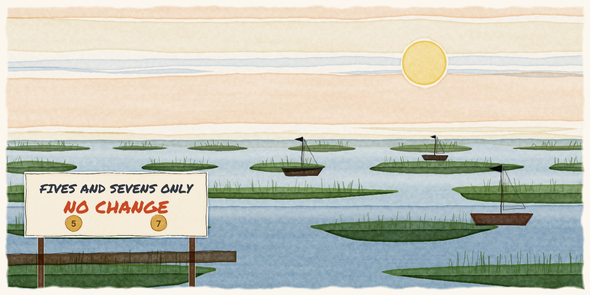

A river splits into a hundred channels, every crossing has a toll, and the ferry never gives change.
Morning fog over a maze of channels. Every ferry flies the same black flag. At the first dock, a painted sign: "Fives and sevens only. NO CHANGE."
Diego: So yesterday we could put weights on both pans. Today money only goes one way.
El Gran Pesado (stepping off a ferry, counting coins): The Delta mints two coins: the oxygen five and the nitrogen seven. Pay any toll exactly, and you cross. Overpay, and the river keeps the rest.
Sofía: And if the toll is one?
El Gran Pesado: Then you swim. Some tolls cannot be paid. Most can. I will tell you a secret: there is a last toll nobody can pay. Every toll above it, anyone can pay.
Kevin: A last one? Out of infinitely many numbers?
Ana (already writing columns of numbers): Give me five columns and I'll show you where it is.
Each column holds the tolls with the same leftover mod the smaller coin. Press a toll to see how to pay it.
Sections marked Core are taught on both schedules. Semester sections are taught in class on the semester schedule and are reading on the quarter schedule. Optional code quests can replace Navigator problems on either schedule. On the quarter schedule, Lab notes, Studio corners, strategy questions and Navigator or Cartographer problems are extensions students choose.
Each session is 50 minutes. Both full schedules
A toll t can be paid with x fives and y sevens when
This is the smiths' balance from Euclid's Forge with one rule added: no change, so nothing goes on the other pan.
Pick a confidence for each card before you read on. Your choices stay in this browser only. Each card names the section that settles it.
An equation where only integer answers count is called Diophantine. The Forge told us when ax + by = c has a solution: exactly when gcd(a, b) | c. Today we find all of them. First, a lemma that the rest of the course leans on.
If a | bc and gcd(a, b) = 1, then a | c.
Proof. By Bézout, ax + by = 1 for some integers x, y. Multiply by c: acx + bcy = c. The number a divides acx, and it divides bcy because a | bc. So a divides their sum, c.
Let d = gcd(a, b) and suppose (x0, y0) solves ax + by = c. Then the solutions are exactly
Proof. These all work: the extra terms add a(b/d)t − b(a/d)t = 0. Conversely, take any solution (x, y). Subtracting, a(x − x0) = b(y0 − y). Divide by d: (a/d)(x − x0) = (b/d)(y0 − y). Now a/d and b/d are coprime, so by Euclid's lemma b/d divides x − x0. Call the quotient t; substituting back gives y = y0 − (a/d)t.
On the Delta: 100 = 5·20 + 7·0, so every way to write 100 is x = 20 + 7t, y = −5t. Paying without change needs x, y ≥ 0, which leaves t = 0, −1, −2: (20, 0), (13, 5) and (6, 10). Three ways, no more.
Every solution is a lattice point on the line ax + by = c, and neighbouring solutions are evenly spaced. Filled points in the shaded corner (x, y ≥ 0) are ways to pay without change.
Chemists solve Diophantine equations every day. Burning methane: x CH4 + y O2 → z CO2 + w H2O. Each element must balance, and you can't burn half a molecule:
The smallest positive solution is x = 1, y = 2, z = 1, w = 2: CH4 + 2 O2 → CO2 + 2 H2O. Every other solution is a multiple of it. Try N2 + H2 → NH3, the reaction behind ammonia fertilizer.
From now on the coins a, b are coprime, and a toll is payable if t = ax + by with x, y ≥ 0. Write N = ab − a − b; for the Delta, N = 35 − 5 − 7 = 23.
For every integer t, exactly one of t and N − t is payable.
Proof. By Theorem 4.2 the solutions of ax + by = t have x going up in steps of b, so exactly one solution has 0 ≤ x ≤ b − 1. Call it the standard solution. Every other solution has a larger x and a smaller y, or a negative x. So t is payable exactly when its standard solution has y ≥ 0.
Now compute N − t = ab − a − b − ax − by = a(b − 1 − x) + b(−1 − y). Since 0 ≤ b − 1 − x ≤ b − 1, this is the standard solution for N − t. It is payable exactly when −1 − y ≥ 0, that is, when y < 0: exactly when t is not payable.
For coprime coins a, b: the largest unpayable toll is ab − a − b, and exactly (a − 1)(b − 1)/2 tolls are unpayable.
Proof. Negative tolls are never payable. So for t > N, the mirror N − t is negative and unpayable, which makes t payable. And N itself is unpayable, because its mirror 0 is payable (pay nothing). So N is the last unpayable toll.
Every unpayable toll lies in 0, 1, …, N, and the mirror pairs these N + 1 numbers so that each pair has one payable and one unpayable toll. So exactly (N + 1)/2 = (a − 1)(b − 1)/2 are unpayable. For the Delta, that is 4·6/2 = 12.
See it on the board. Mirror pairs add up to 23: 1 and 22, 2 and 21, … , 11 and 12. In each pair, one toll is payable and one is not. Check a few on the toll board.
Ana's way, with five columns: column r (leftover r mod 5) starts being payable at the first multiple of 7 in it, namely 0, 21, 7, 28, 14. The latest start is 28 = 4·7, so the last gap is just above it: 28 − 5 = 23. Turn this into a proof of ab − a − b for any coprime coins.
El Gran Pesado runs the Delta mint. The coins on the table make some tolls payable. Players take turns minting a new coin: its value must be a toll that is still unpayable. After each new coin, more tolls become payable. Whoever is forced to mint the 1-coin loses (with a 1-coin, every toll is payable and the mint goes broke).
You mint first. El Gran Pesado never makes a mistake.
Here is a surprise: from every starting table, the player who mints first can force a win. Prove it without finding the winning move. Hint: what does minting the largest unpayable toll change? If that move loses, what does that tell you about your opponent's replies? (This argument is called strategy stealing.)
Coins minted so far:
Unpayable tolls you may mint (crossed out once they become payable):
Alexandria, about 250 CE. Diophantus wrote the Arithmetica, a collection of problems solved in numbers. He looked for rational answers, not only whole ones, but his name stuck to integer equations anyway.
China, 5th century. Zhang Qiujian's Mathematical Manual poses the Hundred Fowls problem: a rooster costs 5 coins, a hen 3, and three chicks cost 1. Buy 100 birds with 100 coins. Counting (roosters, hens, chicks), there are four answers, one of them with no roosters at all: (0, 25, 75), (4, 18, 78), (8, 11, 81), (12, 4, 84).
India, 499 and 628 CE. Āryabhaṭa's kuṭṭaka (the pulverizer) and Brahmagupta's work solve ax + by = c by running Euclid's divisions backwards: the method of Chapter 3.
England, 1884. James Joseph Sylvester published the count (a − 1)(b − 1)/2 as a problem in the Educational Times. Georg Frobenius later asked the same question for any number of coins, which is why the largest unpayable amount is called the Frobenius number.
Deckhand problems are for everyone. Navigator and Cartographer problems are where you stretch.
These cells run real Python in your browser. The first run loads Python (about 10 MB, once). Edit anything and run again.
Produce Euclid’s lemma with Bézout: if gcd(a, b) = 1 and a divides bc, then a divides c. Open the Proof Lab
Where whole-number equations are used: measuring with two jugs, balancing reactions, and impossible scores. Open the Field Station
Ana drops two sevens and two fives into El Gran Pesado's palm: 24. "One more than your last toll." The ferry pushes off. Upriver, the channels narrow toward a ring of mountains, each peak a single, unbreakable stone.